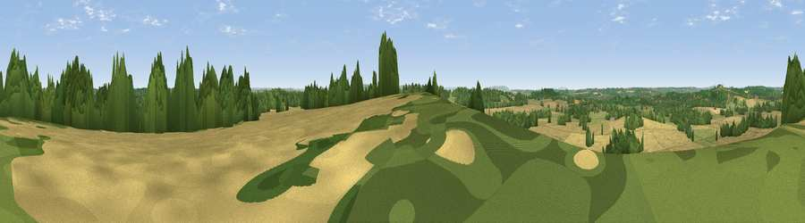

Viewpoint near Walcote
#24975 in England · top 56% of its area beats it · near WalcoteWhere it is
The exact computed spot (SP 13975 57875). Click the marker for map links.
The view, rendered

A 360° render of this exact spot computed from the terrain model, tree cover and land cover — summer colours, afternoon light, calibrated against photographs of famous viewpoints. Real trees, hedges and buildings will differ in detail.
The panorama
Grey silhouette: terrain skyline in each direction (720 bearings, Earth curvature and refraction included). Dashed green: skyline with trees (+15 m) and buildings (+8 m) as obstacles. Blue strip: how far the ground is visible on each bearing.
Where the view opens
Wedge length = distance to the farthest visible ground on that bearing (vegetation-aware). Rings at 10, 25 and 50 km.
What fills the view
67% cropland · 17% woodland · 15% grassland ·
Angular shares of the visible panorama (visual magnitude), not map area. Landscape diversity 0.39 (0–1 Shannon).
Key numbers
More beautiful places nearby
The staircase of upgrades: each row has a higher view potential than everything closer. Driving times are estimates from straight-line distance, calibrated against real road routing — check an actual route before setting out.
| Place | Direction | Drive | Score |
|---|---|---|---|
| Viewpoint near Temple Grafton | SSW · 2 km | ~5 min | 55.8 |
| Viewpoint near Binton | S · 4 km | ~10 min | 56.2 |
| Lodge Hill | NW · 5 km | ~10 min | 64.0 |
| Rous Lench Hill | WSW · 13 km | ~24 min | 64.2 |
| Viewpoint near Meon Vale | SSE · 13 km | ~24 min | 77.0 |
| Broadway Hill | S · 22 km | ~37 min | 77.7 |
| Viewpoint near Elmley Castle | SW · 25 km | ~40 min | 80.5 |
| Bredon Hill | SW · 25 km | ~41 min | 83.0 |
52.21891, -1.79686 · source: screening · position refined by local search. Computed location — check access rights before visiting.